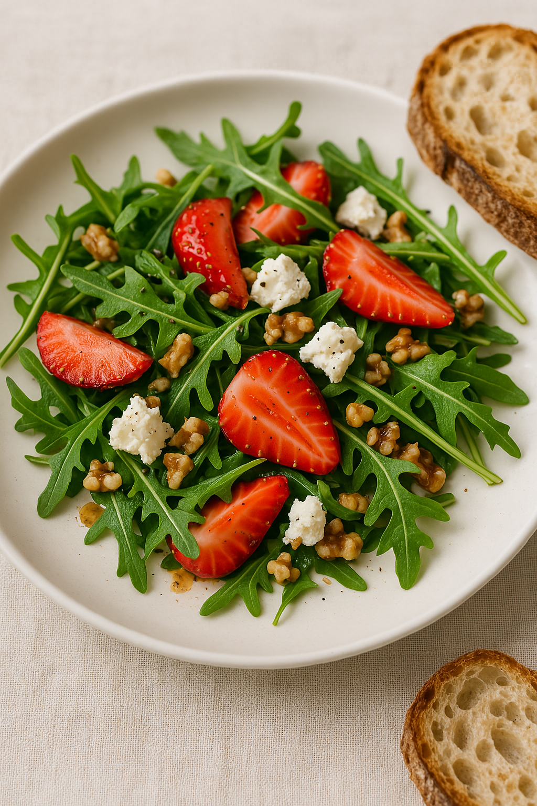

Home
Nordic summer sallad

Description
Nordic summer salad with cheese and wallnuts
Ingredients
- 1 cup fresh arugula
- 1/2 cup sliced strawberries
- 1/4 cup crumbled feta cheese
- 2 tbsp chopped walnuts
- 200 ml Norrmejerier whipping cream
- 1 tbsp honey
- 2 tsp balsamic vinegar
- 1 tbsp olive oil
- 1 pinch ground black pepper
Steps
- In a bowl, mix arugula, strawberries, feta, and walnuts.
- In a small jar, whisk honey, balsamic vinegar, olive oil, salt, and pepper.
- Drizzle dressing over salad and gently toss.
- Serve chilled with a slice of crusty sourdough bread.